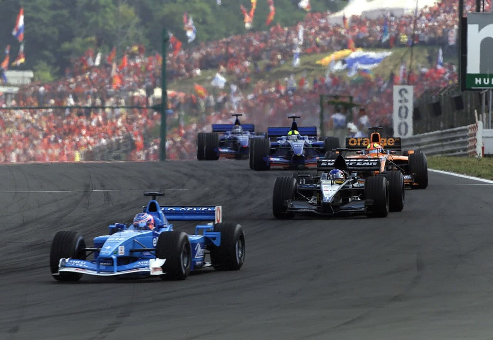

SCHUMACHER É TETRA

Piloto alemão corre agora para ser líder no número de vitórias e, mais à frente, para superar os títulos de Fangio e as poles de Senna
POR ÁMERICO TEIXEIRA JR.
Embora o alemão Michael Schumacher já tivesse garantido um lugar de destaque na história do esporte, o resultado do Grande Prêmio da Hungria, 13ª etapa do Campeonato Mundial de Pilotos e Construtores de Fórmula 1, transportou-o para um posto mais alto ainda. A vitória no circuito de Hungaroring foi um marco na carreira desse piloto de 32 anos, considerado o maior talento atualmente em atividade na categoria máxima do automobilismo. Ao completar as 77 voltas em 1h41min49s675 (média horária de 180.348 km/h), Schumacher derrubou duas importantes barreiras. Ele não apenas garantiu o tetracampenato, como também o fez recebendo a sua 51ª bandeirada da vitória, marcas até então ocupadas isoladamente por Alain Prost. De quebra, Schumacher derrubou, na Hungria, dois recordes de Ayrton Senna. O piloto da Ferrari completou 3.017 voltas na liderança de um Grande Prêmio, contra as 2.986 de Senna, da mesma forma que superou em 152 km a distância total percorrida no 1º posto. No leste europeu, o tetracampeão somou 13.826 km na liderança.

Mas a onda de conquistas não parou por aí. Rubens Barrichello cumpriu um papel importante durante todo o final de semana húngaro e, com o 2º posto (o que lhe garantiu o 9º pódio na temporada para o piloto brasileiro), avançou na briga pelo vice-campeonato e ajudou a Ferrari na conquista antecipada do Mundial de Construtores, o 11° da história da equipe fundada por Enzo Ferrari. Agora, para que a equipe comandada pelo francês Jean Todt comemore, ao final do ano, a mais ampla conquista da Fórmula 1, Rubens Barrichello deverá lutar, com todo o suporte da equipe, pelo vice-campeonato. E o papel de Barrichello foi tão importante em Hungaroring, mas também em toda a temporada, que Schumacher deu de presente para seu companheiro de equipe o troféu da vitória na Hungria. Em termos estatísticos, a última vez que uma equipe ficou de posse do título de construtores, além dos de campeão e vice para seus pilotos, foi em 1997. Naquele ano, a Williams ficou com todos os títulos em jogo, mas o vice de Heinz-Harald Frentzen foi, na verdade, resultado da punição imposta pela FIA sobre Schumacher em razão da sua tentativa de tirar Jacques Villeneuve da corrida na decisão do título, no Grande Prêmio da Europa, em Jerez. Mas, de fato, a última vez que essa “tríplice coroa” foi conquistada na pista foi através da própria Williams, um ano antes, com Damon Hill, seguido por Villeneuve.

Se na esfera do subjetivo as discussões são infinitas sobre quem é o melhor piloto da história da Fórmula 1, quando as carreiras se resumem aos números, constata-se que Schumacher tem dois importantes desafios pela frente para ser considerado, de fato, o maior de todos. As duas barreiras que se apresentam para ele são os cinco títulos de Juan Manuel Fangio no Mundial de Pilotos e as 65 pole positions de Ayrton Senna. E rumo a esses dois quesitos o novo tetracampeão não pára de caminhar, pois em Hungaroring assinalou a 41ª pole position de sua carreira.
Negar as qualidades de Schumacher e a sua condição de melhor piloto da atualidade, razão pela qual conquistou com méritos o título mais significativo de sua carreira, é não querer ver a própria realidade da Fórmula 1. Mas é inegavelmente realidade que a jornada do piloto alemão em direção ao tetra-campeonato foi amplamente facilitada. Não bastassem o seu talento acima da média e a excelência da Ferrari F2001, Schumacher praticamente não teve adversários. Diante de uma McLaren em crise e das limitações impostas a Rubens Barrichello no sentido de não vencê-lo na pista, restou a Schumacher esbanjar competência em um cenário de quase nenhuma pressão dos adversários. Some-se a isso a atuação quase sempre precisa de Barrichello, roubando por seis vezes pontos precisos de David Coulthard (McLaren Mercedes), o único que se mostrou em condições de atrapalhar a vida do primeiro piloto da Ferrari, para selar um quadro de predominância ferrarista na temporada 2001.

Não deixa de ser uma pena que uma conquista tão importante e histórica tenha tido como palco um circuito travado, que não permite ultrapassagem e, portanto, emoção, como Hungaroring. Desse modo, qualquer possibilidade de maiores mudanças ficaram praticamente restritas à largada e aos pits. Ao apagar das cinco luzes vermelhas, Schumacher confirmou a pole e saiu em 1º, seguido por Barrichello, que largou muito bem e superou Coulthard, que dividia a primeira fila com o alemão. Ainda no primeiro ato da prova, Eddie Irvine Oaguar Cosworth) e Tarso Marques (Minardi European) saíram da pista, com prejuízo maior para o irlandês, que abandonou ainda na primeira curva. Aos três primeiros seguiram-se Ralf Schumacher (Williams BMW), Jarno Trulli (Jordan Honda), Mika Hakkinen (McLaren Mercedes), Nick Heidfeld (Sauber Petronas), Juan Pablo Montoya (Williams Honda), Kimi Raikkönen (Sauber Petronas) e Olivier Panis (BAR Honda).

A partir daí, enquanto Schumacher aproveitava a disputa entre Barrichello e Coulthard, pelo 2º posto, para abrir vantagem na liderança, os três primeiros já se distanciavam dos demais. Enrique Bernoldi (Arrows Asiatech), com problemas de freios na volta 9, foi o segundo abandonar a prova. Três voltas depois, com um pneu furado, foi a vez de Luciano Burti (Prost Acer) ficar pela pista. Na primeira parada de boxes de Schumacher, na volta 28, ele tinha cerca de 10s sobre Barrichello, que desde o início tinha Coulthard logo atrás. O brasileiro só perdeu a posição nos boxes. Ele parou na 31ª passagem, uma antes do piloto da McLaren. A diferença de 7s5 para 9s1 fez com que o escocês retornasse na frente do brasileiro. Na volta 35, Jenson Button (Benetton Renault) rodou na reta dos boxes e seu carro ficou atravessado na pista. As posições voltaram à situação inicial quando Barrichello, em seu segundo pit (volta 54), retomou a 2ª posição e cruzou a apenas 0s577 de vantagem sobre Coulthard, que teve de amargar uma presença pouco a vontade no pódio da vitória ferrarista.

Dos “estreantes” da prova, Jean Alesi foi o melhor. Em sua primeira prova na Jordan, apesar de pouco confortável em um carro concebido para as dimensões de Heinz-Harald Frentzen (que estreou no seu lugar na Prost, abandonando na volta 64 por ter perdido o controle do carro e saído da pista), terminou em 10º, não sem antes realizar uma ousada ultrapassagem sobre Pedro De La Rosa. Já Tarso Marques, ao abandonar na 64a volta com problemas de motor, completou a enfadonha rotina brasileira (a exceção de Barrichello) de infortúnios nas equipes menores da Fórmula 1.

JEAN ALESI: A VOZ DA EXPERIÊNCIA

O mais experiente piloto da atual Fórmula 1 vai para a Jordan e ganha outra chance de mostrar seu talento
POR VENÍCIO ZAMBELI
As vésperas de completar 200 Grandes Prêmios de Formula 1, fato que poderá acontecer na corrida dos Estados Unidos no dia 30 de setembro próximo, Jean Alesl começou mais uma nova fase em sua carreira. Na Hungria, o piloto francês de 37 anos completou um total de 197 corridas na categoria e se participar de todas as prova até o fim deste ano, chegará aos 201 Grandes Prêmios, marca que o colocará atrás, em número de participações na Formula 1, atrás apenas de Riccardo Patrese (256), Gerhard Berger (210), Andrea de Cesaris (208) e Nelson Piquet (204). E foi na prova disputada no leste europeu que Alesi iniciou suas atividades como piloto na Jordan, mesma equipe na qual tornou-se campeão, só que na Fórmula 3000, em 1989 (mesmo ano em que estreou na Fórmula 1, mais precisamente no Grande Prêmio da França, por meio da Tyrrell). Sua contratação deveu-se ao fato de Eddie Jordan ter demitido o piloto alemão Heinz-Harald Frentzen, que tinha acordo até o fim de 2002, após o Grande Prêmio da Inglaterra. Somou-se a isso, a crise financeira enfrentada pela equipe Prost, defendida pelo francês desde o ano passado. Alesi não estava recebendo seu salário em dia. E em um rápido encontro no paddock do Grande Prêmio da Alemanha, Alesi e Eddie Jordan conversaram e viram a possibilidade de fazer a parceria. Uma semana depois, Alesi trocou a Prost pela Jordan. Com a mudança, o piloto contabiliza em sua carreira de Fórmula 1 passagem por seis times em 13 temporadas.
Iniciou na Tyrrell, por onde fez oito provas em 1989 e, depois, a temporada completa de 1990. Foi lá na estrutura comandada por Ken Tyrrell que o jovem piloto, com 25 anos na época, despertou interesse dos chefes das outras equipes com belas atuações. O “novato” obteve, além de dois 4a lugares (GP da França e GP da Inglaterra) e um 5a (GP da Itália) em 1989, dois 2º lugares (GP dos EUA e GP de Mônaco) e um 6° (GP de San Marino) em 1990. Na corrida dos Estados Unidos em que foi 2º, ele encarou de frente uma disputa pela 1ª posição com Ayrton Senna — naquela época, bicampeão da categoria. Senna tentou ultrapassar Alesi, mas levou o troco do francês na curva seguinte, surpreendendo o brasileiro. Mas na volta posterior, o piloto da McLaren não deu chances. Assumiu a liderança e venceu depois. No ano seguinte, Alesi foi para a Ferrari, após uma batalha judicial entre o time italiano, a Williams e a própria Tyrrell, que mantinham acordos com o piloto. Na equipe de Maraneilo, Alesi manteve-se por cinco anos e disputou 79 corridas. Foi lá que obteve a sua única vitória na Fórmula 1 até hoje, no Grande Frêmio do Canadá de 1995. Em 1996, transferiu-se para a Benetton e ficou no time de Flavio Briatore até 1997, onde conseguiu suas melhores colocações no Mundial de Pilotos: 4e lugar nos dois anos. Depois ele correu pela Sauber (1998 e 1999) e pela Prost (2000 e 2001), até ir agora para a Jordan. Em todos estes anos, Alesi nunca conseguiu grandes resultados que o deixassem disputar um título. Mesmo assim, sempre foi um piloto técnico e veloz, uma combinação de talento que é valorizada por qualquer chefe de equipe. Outro fator favorável que o distingue da maioria dos demais é a sua alegria contagiante e seu bom humor constante.
MOTIVAÇÃO — Durante este ano, Alesi foi alvo de diversas especulações que davam como certa a sua aposentadoria ao fim desta temporada. Realmente, nada está confirmado para o ano de 2002, mas o piloto não demonstra vontade de parar. Alesi está muito entusiasmado com a oportunidade de guiar um carro melhor do que o AP04 e que lhe permita mostrar toda sua experiência. “Vou poder provar que ainda tenho muito a fazer como piloto”, concluiu. Resta saber se o francês ficará com uma vaga na própria equipe Jordan Grand Prix para 2002. Mas se depender desse entusiasmado piloto, a resposta seguramente será “sim”.